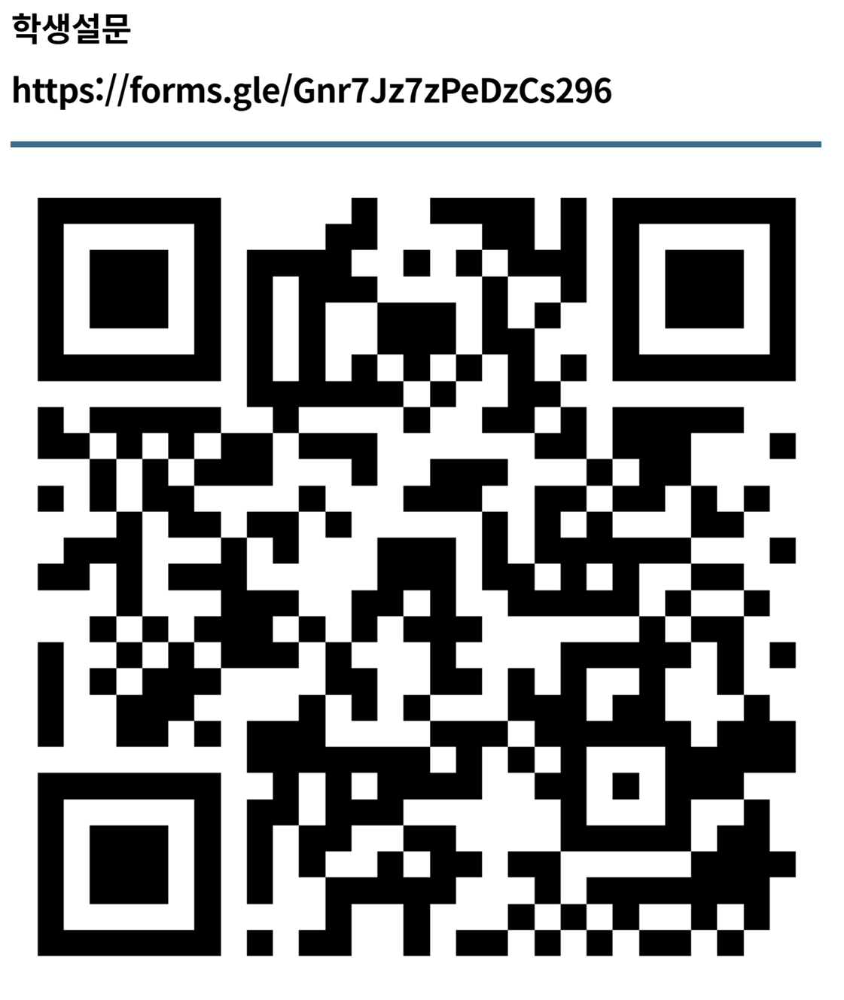

선생님, 안녕하세요. 학기말 바쁜 업무 중에도 연구에 참여해 주셔서 진심으로 감사드립니다.
아래의 [검사 실시 지침]을 참고하시어 설문을 진행해 주시면 연구에 큰 도움이 되겠습니다.
1. 검사 실시 전 유의 사항
- 본 조사는 정답이 없는 인식 조사임을 강조해 주세요.
- 학생들이 솔직하게 응답할 수 있도록 허용적인 분위기를 조성해 주시기 바랍니다.
2. 학생 질의 대응 가이드
Q: "선생님, 롤모델이 뭐예요?"
- ★ 교사는 롤모델의 정의를 직접 설명하지 않습니다.
- 표준 답변: "표지를 넘겨서 1번과 2번 문항을 차례대로 읽어보면 알 수 있을 거야. 질문을 천천히 읽고 떠오르는 대로 적어보렴."
- 이유: 특정 범주(예: 위인)로 제한되는 프레이밍 효과 방지 목적입니다.
3. 문항별 지도 지침
[1번 문항] 인기 있는 대상을 모를 때
- 특정 인물이 아니어도 유튜브 채널, 게임, 운동선수 그룹 등도 가능함을 안내해 주세요.
- 정말 생각나지 않는다면 '모름'이라 적고 2번으로 넘어가도록 지도합니다.
[2번 및 2-1번 문항] 닮고 싶은 인물
- 2번과 2-1번은 세트 문항이므로 이유를 상세히 적도록 안내해 주세요.
- 닮고 싶은 인물이 없으면 '없음'으로 적고 2-1번은 비워둡니다.
[설문 참여 QR 코드]

스마트 기기 카메라로 위 코드를 스캔하여
설문을 시작해 주세요.
© 2025 Moon Ah-young. Korea National University of Education.